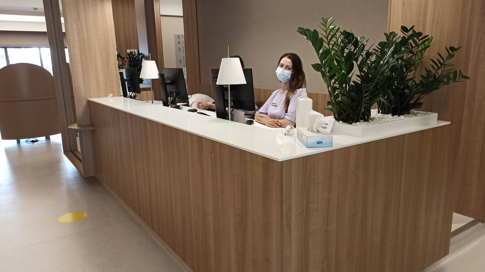

Ресепшн-стійки
Головний предмет у лобі. Гнуті форми, підсвітка, робоча зона зсередини й фасад без жодного видимого шва.
Ресепшн-стійки, барні стійки, столи для закладів, групові умивальники й торгові прилавки. Об'єктна робота: за проєктом, у графік, з однієї партії плити на весь об'єкт і з поверхнею, яку можна відремонтувати без зупинки закладу.

Що робимо
Головний предмет у лобі. Гнуті форми, підсвітка, робоча зона зсередини й фасад без жодного видимого шва.
Стільниця бару, фасад, полиці й підвіконня-стійки. Поверхня тримає лід, цитрус і алкоголь та миється за зміну.
Однакові стільниці партією: один колір, один торець, один розмір. Пошкоджену міняють з запасу, а не переробляють увесь зал.
Суцільна стільниця з кількома чашами без жодного стику. У санвузлі з великим трафіком це головний аргумент.
По суті
Те, що вдома служить десять років, у барі зношується за рік. Тому в HoReCa ми радимо не найкрасивіший матеріал, а той, що ремонтується.
Акриловий камінь шліфується на місці за кілька годин уночі. Замінити стільницю бару означає закрити заклад — це зовсім інші гроші.
Плиту закуповуємо одним лотом. Інакше через півроку добірка вже інша, і нова стійка відрізняється від старої на очах.
Зрив термінів на об'єкті коштує дорожче за сам виріб. Ми називаємо строк до підписання і вбудовуємось у ваш графік робіт.
Питання
Залежить від обсягу, але ми завжди називаємо строк до підписання і тримаємо його. Для об'єктів складаємо графік з етапами, щоб він ліг у ваш загальний графік робіт.
Так, це основний формат. Приймаємо креслення, перевіряємо на технологічність і повертаємо зауваження до початку робіт, а не в процесі.
На акриловому камені скол чи подряпину виводять шліфуванням на місці, без зупинки закладу на кілька днів. Саме тому в HoReCa ми найчастіше радимо акрил.
Так, з просвічуваного акрилу або онікса. Підсвітка ставиться зсередини, камінь світиться рівно, без плям від окремих ламп.
Так. У нас два виробництва — у Києві та в Аліканте, тому об'єкти в Україні та Європі однаково робочі.
Для бізнесу
Об'єктна робота від прорахунку до монтажу: креслення, специфікації, зразки для узгодження, графік з етапами, свій замірник і монтажна бригада.
Суміжні розділи
Дякуємо. Передзвонимо протягом години в робочий час.